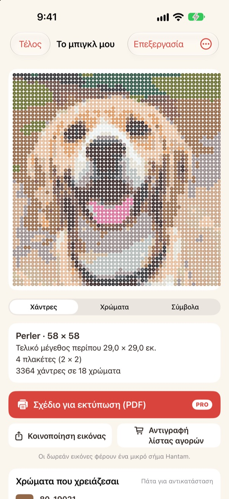
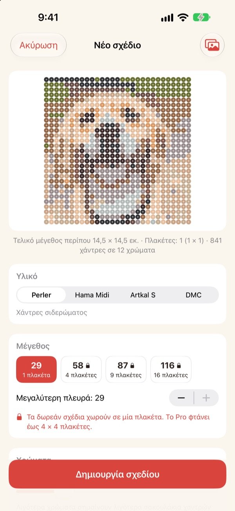
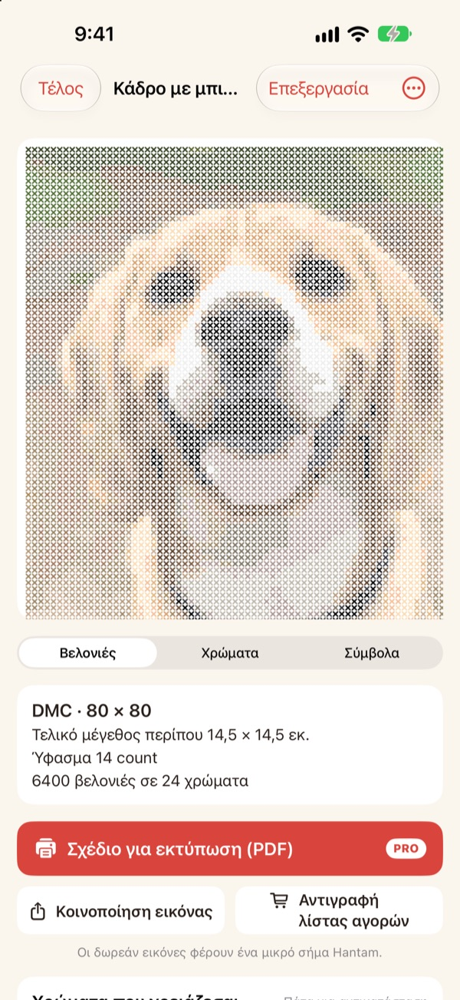
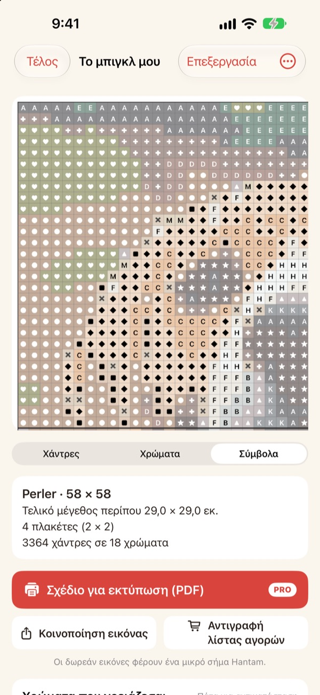
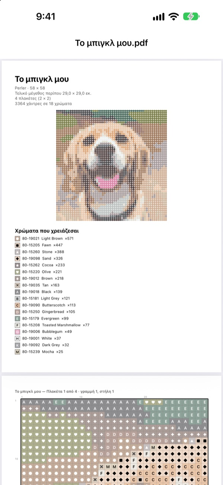

Μια φωτογραφία
γίνεται σχέδιο
Διάλεξε μια φωτογραφία του κατοικιδίου σου, του προσώπου σου ή του αγαπημένου σου ήρωα. Το Hantam τη μετατρέπει σε σχέδιο για χάντρες σιδερώματος ή σταυροβελονιά, με χρώματα που μπορείς να αγοράσεις.
Δωρεάν για σχέδια μίας πλάκας. Οι φωτογραφίες δεν φεύγουν από το iPhone σου.

Δοκίμασέ το σε μια φωτογραφία
Η ίδια αντιστοίχιση χρωμάτων με την εφαρμογή, με το πραγματικό χρωματολόγιο της Perler. Άλλαξε μέγεθος και αριθμό χρωμάτων ή δοκίμασε με δική σου φωτογραφία.
Το σχέδιο είναι εύκολο. Το να ταιριάξει με αληθινές χάντρες, όχι
Αν κάνεις pixel μια φωτογραφία σε οποιοδήποτε πρόγραμμα, βγαίνουν χρώματα που δεν έχει καμία χάντρα και καμία κλωστή. Μετά πρέπει να μαντέψεις από ποιο βαζάκι είναι κάθε τετράγωνο και να μετρήσεις πόσα να αγοράσεις. Το Hantam διαλέγει μόνο από χρώματα που πουλιούνται και σου λέει ακριβώς πόσα χρειάζεσαι.
Πραγματικά χρώματα, πραγματικοί κωδικοί
Διάλεξε χάντρες Perler, Hama Midi, Artkal S ή κλωστή DMC. Κάθε τετράγωνο παίρνει ένα χρώμα που η μάρκα πουλάει πραγματικά, μαζί με τον κωδικό του.
Το μέγεθος και τον αριθμό χρωμάτων τα ορίζεις εσύ. Τα μεγάλα σχέδια χωρίζονται σε πλάκες 29 × 29.

Και για σταυροβελονιά
Διάλεξε κλωστή DMC και η ίδια φωτογραφία γίνεται σχέδιο σταυροβελονιάς. Επίλεξε καμβά Aida 11, 14, 16 ή 18 και το Hantam δείχνει το τελικό μέγεθος και πόσες βελονιές θέλει κάθε χρώμα.

Ξέρεις ακριβώς τι να αγοράσεις
Πέρνα στο σχέδιο με σύμβολα και προχώρα τετράγωνο-τετράγωνο, με χοντρές γραμμές σε κάθε άκρη πλάκας ή κάθε 10 βελονιές. Δες πόσες χάντρες θέλει κάθε χρώμα και πάτησε Αντιγραφή λίστας αγορών με ένα άγγιγμα.
Πάτησε ένα τετράγωνο για να το αλλάξεις ή αντικατάστησε ένα χρώμα με άλλο σε όλο το σχέδιο.

Τύπωσέ το και ξεκίνα
Με το Pro εξάγεις ένα Σχέδιο για εκτύπωση (PDF): πρώτα η λίστα χρωμάτων, μετά τα σχέδια με σύμβολα, μία πλάκα τη φορά.

Τρία βήματα ως το σχέδιο
- 1
Επίλεξε φωτογραφία
Κατοικίδια, πρόσωπα, λογότυπα, ήρωες, όλα κάνουν. Οι φωτογραφίες με ξεκάθαρο θέμα βγαίνουν καλύτερα.
- 2
Διάλεξε χάντρες ή κλωστή
Όρισε μάρκα, μέγεθος και αριθμό χρωμάτων.
- 3
Φτιάξ' το
Ακολούθησε το σχέδιο στην οθόνη ή τύπωσέ το με το Pro.
Υλικά και μεγέθη
- Perler · Hama Midi · Artkal S
- Χάντρες σιδερώματος, πλάκες 29 × 29, κάθε χάντρα περίπου 5 χιλ.
- DMC
- Κλωστή σταυροβελονιάς σε καμβά Aida 11, 14, 16 ή 18
- Δωρεάν
- Χάντρες έως 1 πλάκα (29 τετράγωνα), κλωστή έως 40 βελονιές στη μεγάλη πλευρά
- Pro
- Χάντρες έως 4 × 4 πλάκες (116 τετράγωνα), κλωστή έως 200 βελονιές
- Χρώματα
- Από 2 έως 50 ανά σχέδιο
Τα Perler, Hama, Artkal και DMC είναι εμπορικά σήματα των αντίστοιχων κατόχων τους. Το Hantam δεν συνδέεται με αυτούς. Τα χρώματα στην οθόνη μπορεί να διαφέρουν λίγο από τα πραγματικά.
Ξεκίνα δωρεάν. Για μεγάλα σχέδια και εκτύπωση υπάρχει το Pro.
Δωρεάν
- Σχέδια έως μία πλάκα ή 40 βελονιές
- Όλες οι μάρκες: Perler, Hama, Artkal και DMC
- Ποσότητες ανά χρώμα, λίστα αγορών και αλλαγή χρωμάτων
- Έως 3 αποθηκευμένα σχέδια
- Κοινοποίηση εικόνων με ένα μικρό σήμα Hantam
Hantam Pro
- Σχέδια PDF για εκτύπωση
- Έως 4 × 4 πλάκες ή 200 βελονιές
- Απεριόριστα αποθηκευμένα σχέδια
- Εικόνες χωρίς σήμα
- Όλα τα εργαλεία pixel art
Μηνιαία ή ετήσια συνδρομή, ή εφάπαξ αγορά για πάντα
Μπορείς επίσης να κάνεις δώρο το Pro σε φίλο μέσα από την εφαρμογή.
Συχνές ερωτήσεις
Ανεβαίνουν κάπου οι φωτογραφίες μου;
Όχι. Οι φωτογραφίες και τα σχέδια επεξεργάζονται και αποθηκεύονται μόνο στο iPhone σου.
Τα χρώματα φαίνονται λίγο διαφορετικά από τις χάντρες μου.
Η οθόνη δείχνει τα χρώματα διαφορετικά από το πλαστικό και την κλωστή. Πάτησε ένα χρώμα στη λίστα για να το αλλάξεις με κοντινότερο της ίδιας μάρκας.
Πόσο μεγάλο μπορεί να γίνει ένα σχέδιο;
Δωρεάν χωράει σε μία πλάκα 29 × 29 ή 40 βελονιές στη μεγάλη πλευρά. Με το Pro έως 4 × 4 πλάκες (116 χάντρες) ή 200 βελονιές.
Ποιες φωτογραφίες βγαίνουν καλύτερα;
Όσες έχουν ένα θέμα και απλό φόντο. Όσο λιγότερα χρώματα, τόσο πιο καθαρό το σχέδιο, οπότε αν φαίνεται φορτωμένο, μείωσε τον αριθμό χρωμάτων.
Μπορώ ακόμα να κάνω pixel art;
Ναι. Pixel σε φωτογραφίες, σχέδιο με βάση 110 δείγματα και animation καρέ-καρέ υπάρχουν όλα. Όλα τα εργαλεία pixel art περιλαμβάνονται στο Pro.
Πώς επαναφέρω την αγορά μου;
Άνοιξε τις ρυθμίσεις της εφαρμογής και πάτησε Επαναφορά αγορών. Χρησιμοποίησε τον ίδιο λογαριασμό Apple με τον οποίο αγόρασες το Pro.
Πώς ακυρώνω τη συνδρομή;
Πήγαινε στις Ρυθμίσεις του iPhone › το όνομά σου › Συνδρομές και διάλεξε Hantam. Η πρόσβαση για πάντα είναι εφάπαξ πληρωμή και δεν ανανεώνεται.
Πώς αναφέρω ένα πρόβλημα ή προτείνω κάτι;
Το πιο γρήγορο είναι να στείλεις σχόλια από τις ρυθμίσεις της εφαρμογής. Μπορείς επίσης να γράψεις στη διεύθυνση παρακάτω ή να στείλεις DM στο Instagram (@lee25_ios).
Ερωτήσεις, προβλήματα και ιδέες στο leeo@kakao.com.